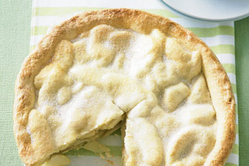

Page 7

Ingredients (serves 8)
1 cup plain flour
1/2 cup self-raising flour
1/2 cup cornflour
125g butter, chilled, chopped
1/3 cup caster sugar
1 egg, separated
whipped cream, to serve
Apple filling
10 medium (1.25kg) granny smith apples, peeled, cored, cut into thin wedges
1/4 cup caster sugar
1/4 teaspoon ground cinnamon
2 teaspoons lemon juice
Method
Place flours, butter and 1/4 cup sugar in a food processor. Process until mixture resembles fine breadcrumbs. Add egg yolk and 1/4 cup cold water. Process until pastry just comes together. Turn pastry onto a lightly floured surface. Knead gently until smooth. Wrap in plastic wrap. Refrigerate for 30 minutes or until firm.
Meanwhile, make apple filling: Place apples and 1/3 cup cold water in a baking classics saucepan. Bring to the boil. Reduce heat to medium-low. Simmer, covered, for 5 to 7 minutes or until apples are tender. Drain. Return apples to pan. Stir in sugar, cinnamon and lemon juice. Set aside.
Preheat oven to 180°C/160°C fan-forced. Grease a 3cm-deep, 20cm (base) round glass or ceramic pie dish.
Place two-thirds of the pastry between 2 sheets of baking paper. Roll out into a 30cm round. Line base and sides of prepared dish with pastry. Trim edges. Spoon in filling. Brush edge with a little eggwhite. Place remaining pastry between 2 sheets of baking paper. Roll out until large enough to cover dish. Cover filling with pastry. Press edges together. Trim excess.
Make 2 cuts in top for steam to escape. Brush with remaining eggwhite. Sprinkle with remaining sugar. Bake for 40 to 45 minutes or until golden. Serve with cream.